Photogallery


SRI LANKA by motor scooters
On-the-road for sightseeing, wild animals, sacred places, tea plantations and marvellous beaches with Petr Jahoda, traveller and photographer, and Tomas Petr, photoreporter.
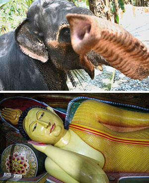
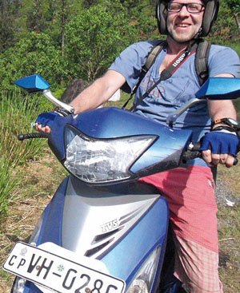
We are offering action style of exploring the picturesque island of Sri Lanka. Each of you will ride a motor scooter. You can control your time, stop wherever you like, enjoy freedom and adrenalin of the ride. You can visit the places to which no travel agency would take you. The group of participants will be very small so we can take care of each of you. To make the travelling more comfortable, a car for your baggage with a driver is going to accompany us, and those who would like to rest a bit can use the car too.
Sri Lanka has a legal alcohol limit of 0.8 per-mille for drivers, and that is why you needn´t worry about residual blood alcohol.
A small group preferring travelling by car can also join this trip ? we can prepare an extra car instead of scooters for up to four participants.
We plan to really enjoy the non-traditional way of travelling that maximizes individual experience and satisfaction. We will go as close to local people and their lives as possible, we will enjoy unbelievable freedom.
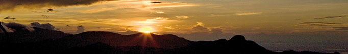
The program is a well-balanced mixture of the top ?must visit? sights and atractive traditional places still not known among tourists. We would like to show you as much of the colourful life in the island out of tourist resorts as possible.
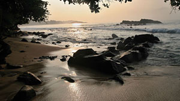
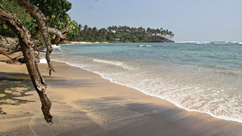
Our trip starts in an easygoing beach resort Unawatuna. It goes on through tea plantations where Tamil women pick up tiny tea leaves. The tea scent accompanies us all the way. Climbing up and down mazy narrow roads is really breathtaking!
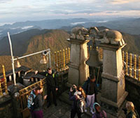
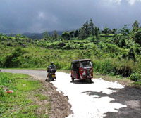
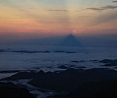
The top of the trip, both program and geographical one, is represented by Adam´s Peak, a 2,243 m (7,359 ft) tall conical mountain. It is well known for the Sri Pada, ?sacred footprint?. Night ascension, followed by calm dawn projecting magic triangl to a misty sleeping land ? that is a view you mustn´t miss!
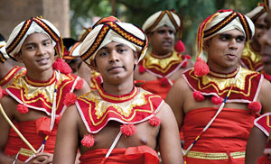
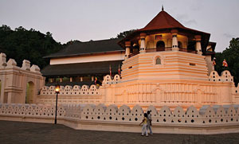
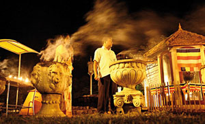
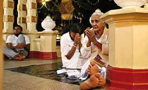
City of Kenda is considered to be a religious centre of Sri Lanka. It is beleived that a holy relic is housed at the Buddha´s Tooth Temple. There are thousands of buddhistic monuments around Kenda Palace and that makes the place very spiritual. Traditional Kendian dances with fire effects can be seen there, too.
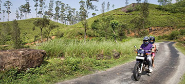
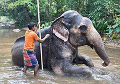
You can visit spice species gardens in Kenda surroundings and get to know exotic plants used in cuisine and especially in traditional ayurvedic medicine. If you love tropical flora you shouldn´t skip Peradeniya botanical garden. And the highlight of the trip? Visiting a private elephant house where you can enjoy riding elephants and washing them.
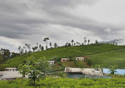
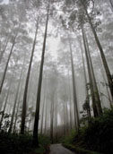
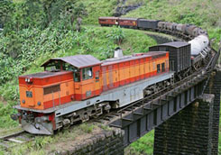
Travelling by train through Horton Plains belongs among the best landscape adventures. The trains slowly passes dramatical mountain terrain hidden in misty curtains. Delicatessen sellers provide passengers with both food and entertainment. Enjoy the atmosphere of the good old colonial days!
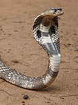
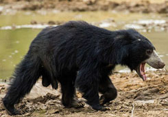
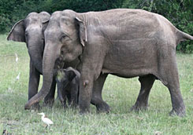
There are lots of protected areas with numerous wild animals in Srí Lanka. All of them are dominated by herds of elephants, whose Sri Lankan population is about 4000. You can see crocodilles, lots of birds, antelopes, water buffaloes, monitor lizards and distinct leopards or sloth bears.
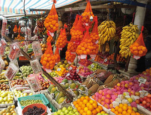
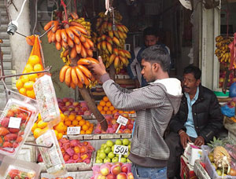
Nuwara Elyia area is considered The Garden of Sri Lanka. You can taste the best tropical fruit, much better than anything you can buy in supermarkets ? mango, lychee, avocado, papaya, passiflora, durian or breadfruit, and legendary Somerset strawberry.
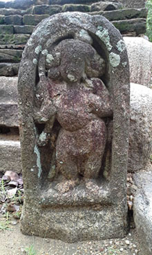
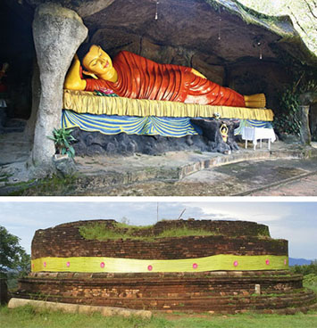
Neglected historical monuments like Magul Maha Viharaya Temple are scattered throughout Lahugala region. Some of the ruins are more than 2,200 years old.
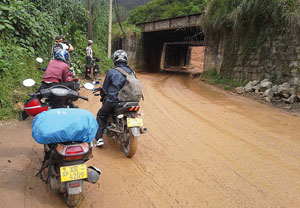
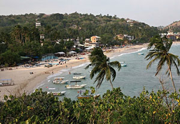
Southern coast is full of beaches where you can relax, snorkel or surf. This is the starting point for whale excursions. City of Galle, our final destination, offers a beautiful historical downtown, colonial cafes and modern shopping malls.
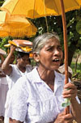
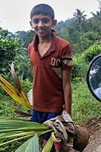
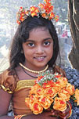
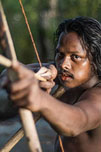
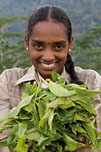
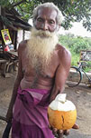
Itinerary:
Day 1: arrival, transport by van from Colombo Airport to beach resort Unawatuna. Welcome drink and dinner at Blow Hole Rest with western menu.
Day 2: renting scooters, tutored ride and then departure for the village of Horagoda, visiting a ?snake man?, ayurvedic physician keeping venomous and nonvenomous species of Sri Lankan snakes. Night close to Deniyaya (app. 70 km in the day).
Day 3: transfer to the north to the foothill of Adam´s Peak, through picturesque landscape of tea terraces. Night in a beautiful touristic village of Dalhausie (app. 120 km in the day).
Day 4: ascencion up to Adam´s Peak, one of the holiest places of Sri Lanka. Sundawn starts at 6am. We can see magic break of a new day when Adam´s Peak is projected to the valley as the Lord´s Eye triangle. Then transit to city of Nuwara Elyia, garden of Sri Lanka, and degustation of fresh tropical fruit. Optionally visit of the only Sri Lankan horse-breeding farm and equitation, or enjoying perfect golf course (app. 80 km in the day).
Day 5: transfer to Kenda up and down through tea plantations, visiting tea factory, sightseeing tour around sacred town of Kenda. Buddha´s Tooth Temple tour, and fire dances ? traditional show (app. 80 km in the day).
Day 6: around Kenda ? Peradeniya botanical garden, famous spices gardens – if you like, you can try natural depilatory. In a little elephant house near Kegalle, you can ride an elephant and even wash it in the river (or maybe be washed by the beast). Return to Kenda (app. 80 km in the day).
Day 7: no-scooter day, they will wait for us parked. The group will get to the city of Haputale by train. The line is one of the railway best, through Horton Plains. We recommend you to try local deli ? roasted garlic bulbs coated in chilli.
Day 8: trekking in Horton Plains, and getting back to Kenda by train.
Day 9: visiting Rock Temple of Sigiriya, one of the UNESCO World Cultural Heritage. Mystical place located on an impressive rock monolith.
Day 10: transfer to Wasgomuwa National Park. Visiting one of the largest Sri Lankan natural reservation with elephant herds (app. 90 km in the day).
Day 11: Vedda village in Dambana, the last indigenous community of the island which resisted the pressure of civilization.
Day 12: transfer to Lahugala National Park region. Night at Viki´s hut surrounded by relaxing elephants possible (app. 140 km in the day).
Day 13: Lahugala, ancient historical monuments sigthseeing (app. 120 km in the day).
Day 14: alongside the coast line to the beach resort of Mirisse, on the way Rock Temple of Mulkirigala can be seen, then jumping and surfing in waves or snorkelling in Mirrise. Optional boat trip to blue whales and dolphins (app. 130 km in the day).
Day 15: return to Unawatuna. Swimming, snorkelling. Goodbye party with local fish dishes dinner (app. 40 km in the day).
Day 16: returning the motor scooters. Sightseeing tour in the town of Galle, ancient colonial centre, souvenir shopping. You can enjoy traditional ayurvedic massage and relaxation at beach wellness. Transfer to Colombo airport.
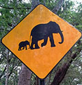
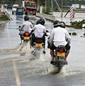
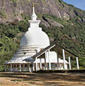
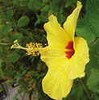
Term: 11.3.2017 – 18.3.2017
The price included: Visas, accommodation in double rooms of mid rank hotels*, motor scooter rental + fuel, accompanying baggage vehicle and its driver, entrance fee to Sigiriya complex and to Wasgomuwa National Park including ranger and offroad cars, experienced English speaking guide, info materials. For those travelling by car instead of the scooters, car rental and fuel.
12th day is an exception ? you can bring your own light sleeping bag or sheets.
The price doesn´t include: International flight tickets and airport taxes and fees, meals, personal insurace*, optional program, atraction fees, entrance fee for temples, villages etc.
We recommend you very convenient Alpenverein membership which includes special insurance for members.
Předchozí stránka: Home
Následující stránka: Expeditions